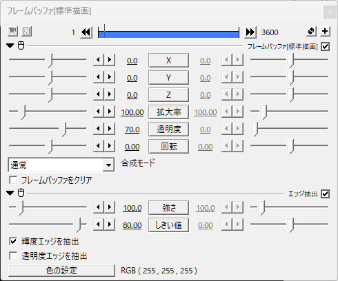
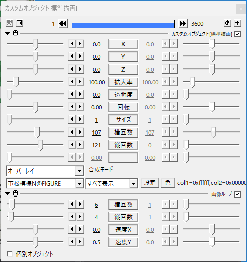

Aviutlでドット妨害を再現できるexoファイル形式のエフェクトです
編集するときはエフェクトのどれかを非表示にするか画質を下げて編集することをおすすめします
さつき氏の"市松模様N"が必要です
1.ダウンロードしたexoファイルをaviutlのタイムラインにぶち込む
2.VHS風にしたい素材とかをぶち込む
3.素材、映像の長さをご自由に調整
4.できた！
模様が輪郭だけ出てくるようにしてくれるやつ
透明度を上げることでちょうどいい濃さにしてる(語彙力)
これを使って輪郭だけ出るようにしてる
メインの部分的なやつ
解像度が高い動画で使うときは"サイズ"を2～4くらいに上げるとそれっぽくなるかも
"縦回数"、"横回数"はそんなにいじらなくても大丈夫
"速度Y"であの動きをつけてる
解像度が高い動画でなおかつ"サイズ"が1のままの時は"縦回数"と"横回数"の数値を上げないと全体にエフェクトをかけられない
